🎯 Introdução
Bem-vindo ao tutorial de edição no ArcGIS Pro para o Cadastro Técnico Multifinalitário! Ele foi feito para técnicos que estão começando no ArcGIS Pro e precisam manter os lotes de Apucarana atualizados — com medidas exatas, sem frestas e com os atributos corretos.
O que você vai aprender
| Bloco | Tema | Tempo |
|---|---|---|
| A | Guia Edit: preparar o projeto, selecionar, ler atributos, salvar e descartar | ~40 min |
| B | Snapping e construção: Parallel, Perpendicular, Direction/Distance, Reverse Direction, Finish — e o epílogo sobre memoriais | ~60 min |
| C | Editar lotes: desmembrar, remembrar, unir e lançar por memorial | ~60 min |
| D | Atributos: corrigir inscrição e área, calcular em lote, copiar dados e achar divergências | ~45 min |
O que você precisa
- ArcGIS Pro com licença ArcGIS Professional.
- A base de treino (download gratuito) e cerca de 10 minutos para preparar o projeto — veja Preparar o ambiente.
Cada bloco tem um passo a passo com as telas anotadas (use as setas ‹ › para avançar), exercícios com ✅ Confira e um teste rápido. Use o índice ao lado para ir direto ao bloco que você precisa.
A base de treino é uma cópia: nada do que você editar altera o cadastro oficial. Mesmo assim, crie o hábito de terminar cada exercício com Discard › Yes.
Quer reforçar os fundamentos antes? O curso on-line Editing Basics in ArcGIS Pro (Esri Academy, ~1h40) é um bom complemento.
🧰 Preparar o ambiente
Antes do Bloco A: baixar a base de treino, criar o seu projeto e conectar o banco. Faça uma vez só.
⬇️ Baixar a base de treino (CTM_Treino_Centro.zip)
CTM_Treino.gdb — geodatabase com Lotes (5.020, bairro Centro), Quadras (219), Logradouros (120) e Edificacoes (vazia, para desenhar).
Bookmarks_Tutorial_CTM.bkmx — os bookmarks centro e quadra 101.014, usados em todos os blocos.
Dados pessoais e fiscais foram removidos. Uso exclusivo para treinamento.
1️⃣ Descompactar
- Crie a pasta C:\Tutorial_CTM.
- Clique com o botão direito no arquivo baixado › Extrair tudo… › destino C:\Tutorial_CTM.
- Confira: dentro da pasta devem aparecer CTM_Treino.gdb e Bookmarks_Tutorial_CTM.bkmx.
Em muitas máquinas de órgãos públicos e empresas, o usuário não pode criar pastas direto no C:\. Nesse caso, use Documentos\Tutorial_CTM (ou outra pasta onde você possa gravar) e siga igual: onde o tutorial disser C:\Tutorial_CTM, use a sua pasta. Nada no tutorial depende de um caminho fixo.
O ArcGIS Pro não lê um geodatabase de dentro do .zip. Se a base não aparecer no Pro, quase sempre é porque ela ainda está compactada.
2️⃣ Criar o projeto em branco
- Abra o ArcGIS Pro. Na tela inicial, em New, clique em Map.
- Name: Treino_CTM · Location: C:\Tutorial_CTM › OK.
- O Pro cria a pasta C:\Tutorial_CTM\Treino_CTM com o arquivo do projeto (Treino_CTM.aprx) e abre um mapa vazio.
3️⃣ Conectar o banco do tutorial
- Abra o painel Catalog (guia View › Catalog Pane, se não estiver aberto).
- Clique com o botão direito em Databases › Add Database.
- Navegue até C:\Tutorial_CTM, selecione CTM_Treino.gdb › OK.
4️⃣ Colocar as camadas no mapa
- No Catalog, expanda Databases › CTM_Treino.gdb.
- Segure Ctrl e clique em Edificacoes, Logradouros, Lotes e Quadras › botão direito › Add To Current Map.
- No painel Contents, arraste para que a ordem fique: Logradouros, Edificacoes, Lotes, Quadras (de cima para baixo).
No Contents, clique no símbolo de Lotes › Properties › cor de preenchimento No color, contorno laranja. Faça o mesmo em Quadras com contorno preto e largura 2 pt. Assim as divisas ficam visíveis como nas imagens.
5️⃣ Importar os bookmarks
- Guia Map › Bookmarks (seta) › Import Bookmarks.
- Selecione C:\Tutorial_CTM\Bookmarks_Tutorial_CTM.bkmx › OK.
- Clique em Map › Bookmarks › quadra 101.014: o mapa vai para a quadra dos exercícios.
6️⃣ Salvar o projeto
- Ctrl+S (ou Project › Save). A partir de agora, abra sempre o Treino_CTM.aprx.
- Abra a tabela de Lotes (botão direito › Attribute Table): o rodapé mostra 5.020 registros.
- Quadras: 219 · Logradouros: 120 · Edificacoes: 0.
- O bookmark quadra 101.014 mostra a quadra do lote 101-014-0355-001, na esquina.
Feche o ArcGIS Pro, apague C:\Tutorial_CTM\CTM_Treino.gdb e descompacte o arquivo de novo. O seu projeto continua funcionando, apontando para a base nova.
🖥️ Bloco A — Conhecendo a guia Edit
Antes de desmembrar ou unir lotes, o técnico precisa saber onde ficam as ferramentas, como escolher o que é editável e como gravar — ou desfazer — com segurança.
📍 Cenário — Primeiro dia no cadastro. Você recebeu o projeto de treino com os lotes do Centro de Apucarana. Antes de qualquer alteração, sua chefia pediu que você deixe o ArcGIS Pro preparado e mostre que sabe selecionar um lote, ler seus dados e desfazer uma edição sem deixar rastro.
Ao final deste bloco você vai saber
- Travar a edição para ninguém alterar o cadastro sem querer.
- Escolher quais camadas podem ser editadas.
- Localizar as ferramentas da guia Edit e os painéis Create e Modify.
- Selecionar um lote e ler os atributos dele.
- Salvar ou descartar uma edição com segurança.
Projeto de treino aberto com as camadas Lotes, Quadras, Logradouros e Edificacoes, e os bookmarks centro e quadra 101.014 (Map › Bookmarks).
APasso a passo
1Preparar o projeto (uma vez só)›
- Abra Project › Options › Editing e, em Session, deixe marcadas as três opções indicadas na tela 1. Faça isso com a edição desligada — com uma sessão aberta, a primeira caixa fica acinzentada.
- No painel Contents, clique na aba do lápis (List By Editing) e deixe marcadas só as quatro camadas do cadastro (tela 2).
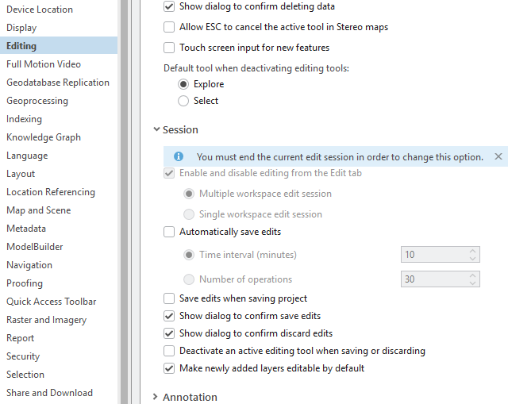
123- 1Enable and disable editing from the Edit tab — liga a trava: só edita quem clicar em Edit.
- 2Show dialog to confirm save edits — pede confirmação antes de gravar.
- 3Show dialog to confirm discard edits — pede confirmação antes de descartar.
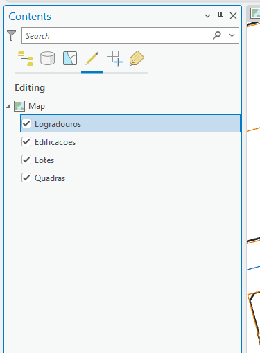
12- 1Aba List By Editing (o lápis) no painel Contents.
- 2Caixinhas de edição: marcadas = camada editável. Ficam só as 4 do cadastro.
- Na guia Edit, o botão Edit aparece e os botões Save e Discard estão acinzentados.
- Em List By Editing aparecem exatamente 4 camadas marcadas.
2Conhecer a guia Edit e os painéis›
A guia Edit concentra tudo o que vamos usar. Não é preciso decorar — basta saber onde fica cada grupo.
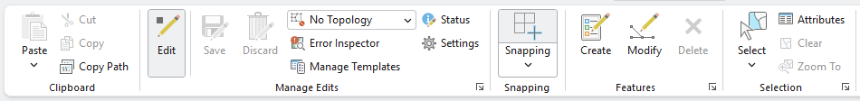
1234567- 1Edit — liga e desliga a edição.
- 2Save — grava as alterações no banco.
- 3Discard — desfaz tudo desde o último Save.
- 4Create — abre o painel para desenhar feições novas.
- 5Modify — abre o painel com as ferramentas de alteração.
- 6Select — seleciona feições no mapa.
- 7Attributes — abre o painel de atributos da seleção.
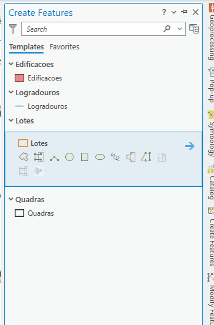
123- 1Aba Templates do painel Create Features (aberto pelo botão Create da guia Edit).
- 2Cada camada editável vira um template — aqui, Lotes.
- 3Ao clicar no template aparecem as ferramentas de construção (polígono, retângulo, círculo…).
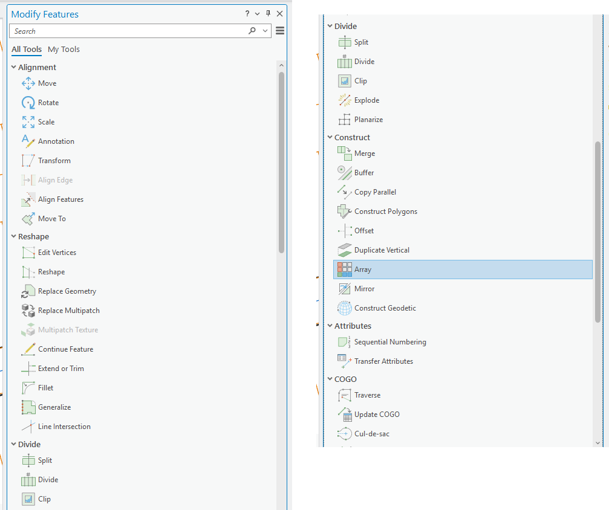
1234- 1Edit Vertices — mover, inserir e apagar vértices.
- 2Split — dividir um lote (desmembramento).
- 3Merge — juntar lotes (remembramento).
- 4Copy Parallel — linha paralela a uma divisa, útil para marcar testadas.
Create é para desenhar o que ainda não existe (uma edificação nova). Modify é para alterar o que já existe (dividir, juntar, mover vértices). Desmembramento e remembramento são Modify.
3Selecionar um lote e ler seus dados›
- Vá ao bookmark quadra 101.014.
- Na guia Edit, clique em Select e depois no lote da esquina, à esquerda da quadra. O contorno fica ciano (tela 1).
- Clique em Attributes e leia os dados do lote (tela 2).
- Clique com o botão direito sobre o lote selecionado para ver o menu de atalhos (tela 3).
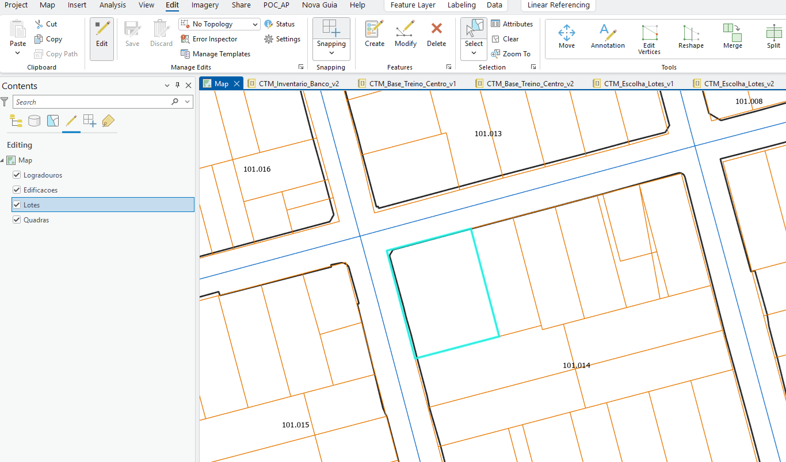
12- 1Ferramenta Select ativa.
- 2Lote selecionado: contorno em ciano.
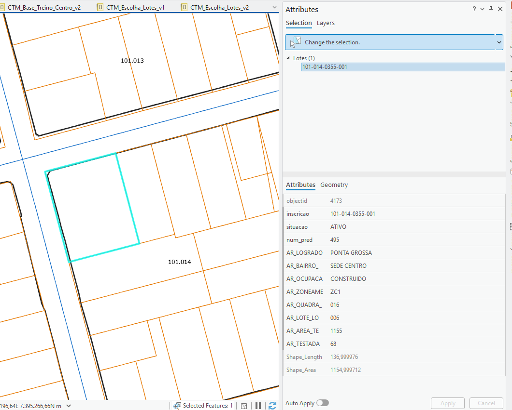
1234- 1inscricao — a identidade do lote: setor 101, quadra 014, lote 0355.
- 2AR_QUADRA_ = 016 — código antigo; não é a quadra oficial (101.014).
- 3AR_AREA_TE = 1155 — área cadastral.
- 4Shape_Area = 1154,99 — área calculada pelo desenho. Batem!
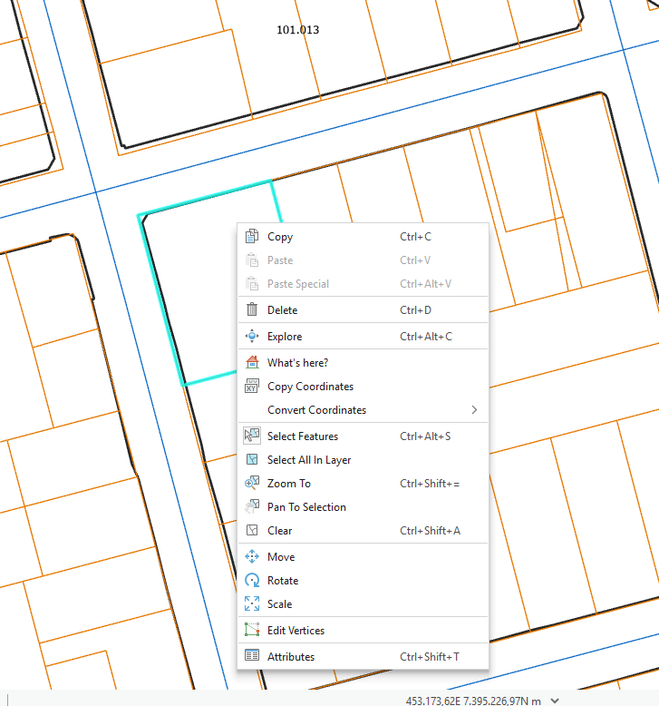
123- 1Move, Rotate, Scale — reposicionar a feição inteira.
- 2Edit Vertices — editar o contorno.
- 3Attributes — mesmo painel do botão da guia Edit.
A quadra oficial está na inscrição, não no campo AR_QUADRA_. O lote 101-014-0355-001 é da quadra 101.014 (setor 101, quadra 014), mesmo com AR_QUADRA_ = 016.
Testada de esquina: o desenho mede 30 × 38,5 m, mas AR_TESTADA traz 68 — provavelmente a soma das duas frentes. Leia os campos com olhar crítico.
4Salvar ou descartar com segurança›
Toda alteração fica pendente até você clicar em Save. Enquanto não salvar, Discard volta tudo ao estado do último Save.
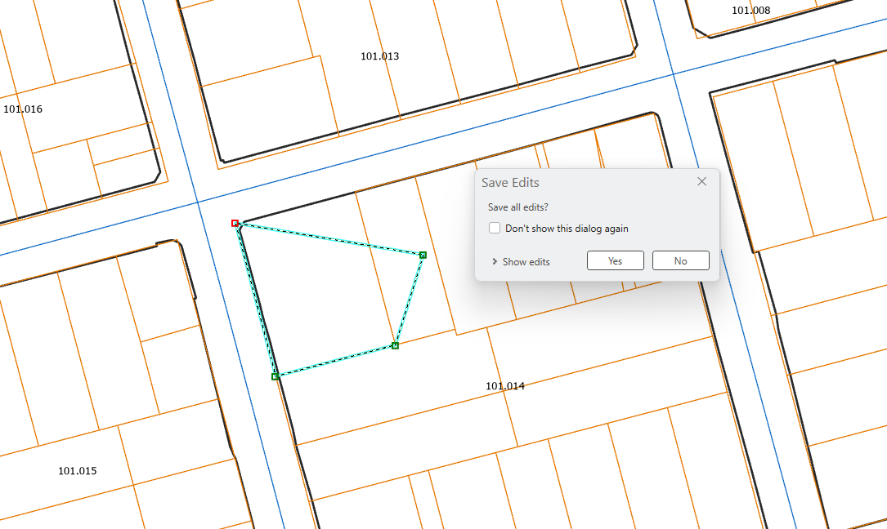
12- 1Um vértice foi movido de propósito.
- 2Yes grava de vez. No exercício, responda No.
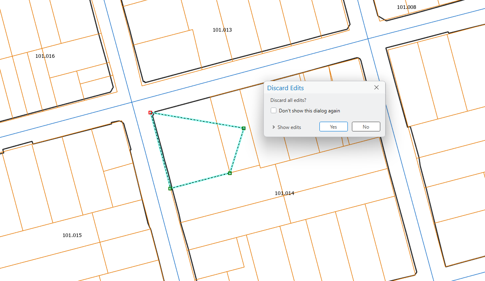
1- 1Yes desfaz a edição — o lote volta ao formato original.
Salve ao fim de cada alteração concluída — não a cada clique, nem só no fim do dia. Para desfazer só o último passo, use Ctrl+Z.
BMão na massa
Exercício A1 — Deixar o projeto seguro
Configure a sessão de edição e deixe editáveis só Lotes, Quadras, Logradouros e Edificacoes.
- List By Editing mostra 4 camadas marcadas.
- Sem clicar em Edit, as ferramentas de edição ficam inativas.
Exercício A2 — Encontrar e ler um lote
Selecione o lote 101-014-0355-001 e responda: qual a área cadastral, a ocupação e o zoneamento?
- AR_AREA_TE = 1155 e Shape_Area ≈ 1154,99 m².
- AR_OCUPACA = CONSTRUIDO · AR_ZONEAME = ZC1.
- Ele fica na quadra 101.014.
Exercício A3 — Errar de propósito e desfazer
- Com o lote selecionado, abra Edit Vertices (botão direito › Edit Vertices) e arraste um vértice.
- Clique em Save e responda No.
- Clique em Discard e responda Yes.
- O lote volta ao formato original.
- Shape_Area volta a 1154,99 m².
- Save e Discard voltam a ficar acinzentados.
CTeste rápido
Quatro perguntas para fechar o bloco.
DPara aprofundar
O curso on-line Editing Basics in ArcGIS Pro (Esri Academy, ~1h40) cobre os mesmos fundamentos com outros exemplos. A documentação oficial tem um tour rápido pela edição.
Próximo bloco: snapping — como garantir que as divisas se encaixem.
🧲 Bloco B — Snapping e ferramentas de construção
Desenhar com precisão não é ter mão firme: é deixar o cursor encaixar onde deve e digitar medidas em vez de “acertar no olho”.
📍 Cenário — A Prefeitura aprovou uma edificação de 10 × 12 m no lote 101-014-0240-001 (esquina, na quadra 101.014), com 2 m de afastamento lateral e 3 m de recuo frontal. Você vai desenhá-la duas vezes, por dois caminhos diferentes — e as duas precisam dar exatamente o mesmo resultado.
Ao final deste bloco você vai saber
- Configurar o snapping e ler a dica de encaixe na tela.
- Desenhar lados paralelos (P) e perpendiculares (E) a uma divisa existente.
- Digitar direção e distância (G) de cada lado.
- Concluir o desenho com Finish (F2) e conferir a área.
- Inverter o sentido de uma linha com Reverse Direction.
Bloco A concluído; bookmark quadra 101.014; o lote V2 é o da esquina inferior esquerda da quadra. Todas as ferramentas deste bloco aparecem no botão direito durante o desenho — ou pelo atalho de teclado entre parênteses.
APasso a passo
1Snapping: fazer o cursor encaixar›
Snapping é o “ímã” do cursor: quando você chega perto de um vértice ou de uma borda, o ponto gruda exatamente nela. Sem isso, toda divisa fica com frestinhas de centímetros.
- Na guia Edit, abra a seta do Snapping e deixe ligados os modos de vértice, borda e extremidade (passe o mouse sobre cada ícone para ver o nome).
- No Contents, aba do ímã (List By Snapping), deixe marcadas só as camadas em que faz sentido encaixar.
- Ao desenhar, observe a dica ao lado do cursor: ela diz em qual camada e em que tipo de ponto ele encaixou.
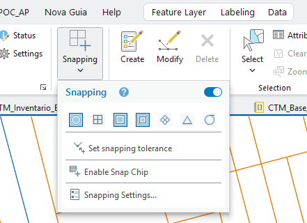
12345- 1Botão Snapping: a seta abre o menu.
- 2Chave geral: liga e desliga o snapping.
- 3Modos de encaixe. Os destacados em azul estão ligados — passe o mouse para ver o nome de cada um.
- 4Set snapping tolerance: o alcance do “ímã”.
- 5Snapping Settings: todas as opções.
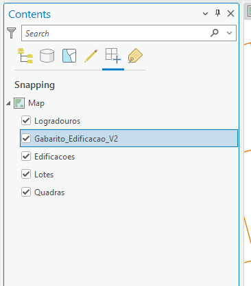
12- 1Aba List By Snapping (o ímã).
- 2Caixinhas: em quais camadas o cursor encaixa.
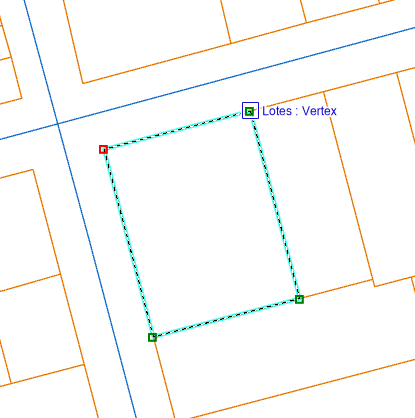
1- 1A dica mostra a camada e o tipo de encaixe: Lotes : Vertex.
Segure a Barra de espaço enquanto desenha para suspender o snapping momentaneamente — útil quando há muitas linhas juntas.
2Parallel (P) e Perpendicular (E)›
Edificações quase sempre acompanham as divisas do lote. Em vez de “mirar” o ângulo, você manda o Pro copiar a direção de uma linha que já existe.
- Em Create Features, clique no template Edificacoes e na ferramenta Polygon.
- Primeiro vértice com Absolute X,Y (F6): X = 453182,34 · Y = 7395124,81 › Enter.
- P › clique na testada oeste do lote (a borda ao longo da rua vertical). Mova o mouse para o norte › D › 10 › Enter.
- E › clique no lado que você acabou de desenhar. Mova o mouse para dentro do lote (leste) › D › 12 › Enter.
- P › clique de novo na testada. Mova o mouse para o sul › D › 10 › Enter.
- Finish (F2) — o último lado fecha sozinho até o primeiro vértice.
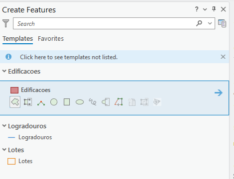
12- 1Template Edificacoes.
- 2Ferramenta Polygon (a primeira da fileira).
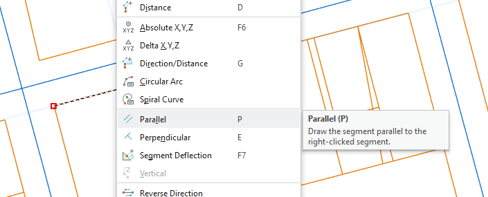
12- 1Primeiro vértice já colocado (quadradinho vermelho).
- 2Parallel (P): o próximo lado fica paralelo à linha em que você clicar.
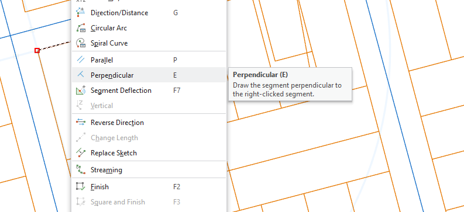
123- 1Perpendicular (E): o próximo lado fica a 90° da linha clicada.
- 2Reverse Direction: inverte o sentido do desenho (passo 4).
- 3Finish (F2): conclui o desenho.
3Direction/Distance (G)›
Quando você já tem as medidas — de um projeto aprovado ou de um memorial — digite cada lado como direção + distância. É o mesmo desenho do passo 2, agora sem depender de clicar em bordas.
- Template Edificacoes › Polygon › primeiro vértice com F6 (mesmas coordenadas do passo 2).
- Para cada lado: G › confira que a unidade é NAz › digite a direção e a distância da tabela › Enter.
- Depois do 3º lado, Finish (F2).
| Lado | Direction (NAz) | Distance | Em rumo seria… |
|---|---|---|---|
| 1 | 345-17-23 | 10 | N 14°42'37" W |
| 2 | 75-17-23 | 12 | N 75°17'23" E |
| 3 | 165-17-23 | 10 | S 14°42'37" E |
| 4 | Finish (F2) fecha sozinho | ||
O formato 345-17-23 significa 345 graus, 17 minutos e 23 segundos.
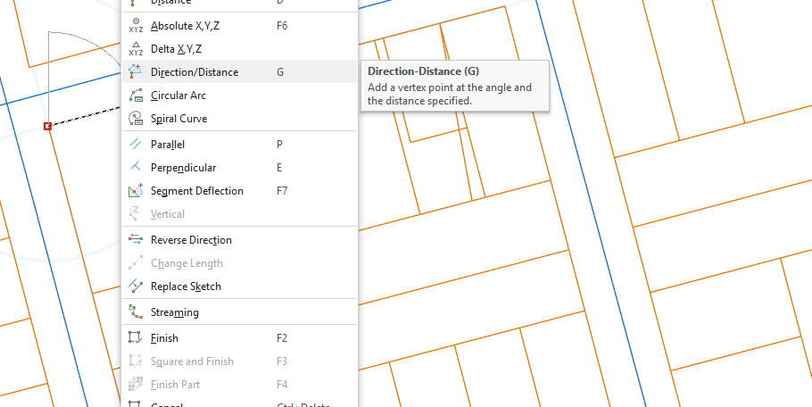
12- 1Direction/Distance (G): abre a caixa para digitar direção e distância.
- 2Finish (F2).
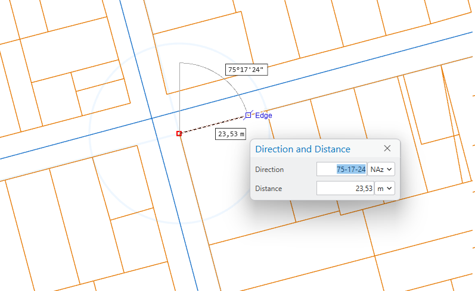
1234- 1Direction: digite no formato graus-minutos-segundos (ex.: 345-17-23).
- 2Seletor do tipo de direção: deixe em NAz (veja o epílogo).
- 3Distance em metros.
- 4O Pro mostra no mapa o ângulo e a distância atuais do cursor.
✅ Confira o resultado
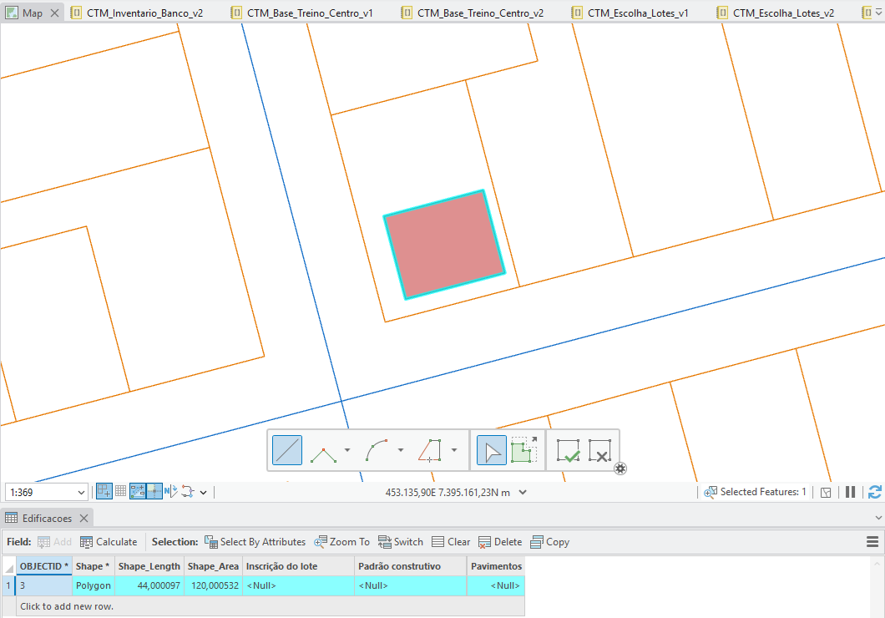
12- 1Edificação desenhada dentro do lote V2.
- 2Shape_Area = 120,000532 m² — confere com 10 × 12 m. Shape_Length = 44,00 m.
- No painel Attributes (ou na tabela), Shape_Area = 120,00 m².
- O instrutor liga a camada de gabarito: o seu desenho cai exatamente sobre o contorno verde.
- O desenho do passo 2 e o do passo 3 são idênticos.
4Reverse Direction (em linhas)›
Numa linha, o desenho sempre continua a partir do último ponto. Se você precisa acrescentar trechos do outro lado, não recomece: inverta o sentido.
- Desenhando uma linha (por exemplo, um eixo em Logradouros), clique com o botão direito sobre um vértice do desenho.
- Escolha Reverse Direction: o primeiro ponto vira o último.
- Continue o desenho — agora ele cresce a partir da outra ponta. Termine com Finish (F2).
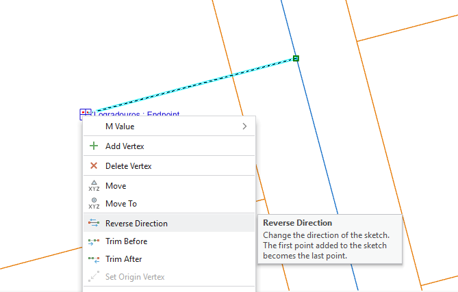
12- 1Último ponto do desenho: é daqui que ele continuaria.
- 2Reverse Direction: o primeiro ponto vira o último.
BMão na massa
Exercício B1 — Configurar o snapping
- Encostando o cursor num canto do V2, aparece a dica Lotes : Vertex.
- Na aba do ímã, só as camadas do cadastro estão marcadas.
Exercício B2 — Edificação com Parallel e Perpendicular
Desenhe a edificação de 10 × 12 m no V2 seguindo o passo 2. Depois, Discard › Yes.
- Shape_Area = 120,00 m².
- Os lados acompanham a direção das divisas do lote.
Exercício B3 — A mesma edificação com Direction/Distance
Repita o desenho digitando direção e distância. Depois, Discard › Yes.
- Shape_Area = 120,00 m², igual ao B2.
- Se a edificação saiu torta ou para fora do lote, veja o epílogo: você pode ter misturado rumo e azimute.
Exercício B4 — Inverter e continuar uma linha
Em Logradouros, desenhe uma linha de dois trechos, use Reverse Direction e acrescente um terceiro trecho pela ponta inicial. Termine com Finish e depois Discard › Yes.
- O terceiro trecho saiu da ponta onde você começou a linha.
🏆 DESAFIO — Desenhe um lote com área exata de 1 ha
Usando só o que você aprendeu neste bloco, desenhe na camada Lotes um polígono com exatamente 1 hectare, numa área livre do mapa. Escolha as medidas, as direções e as ferramentas. No fim, Discard › Yes.
💡 Dica 1 — quanto é 1 ha?
1 hectare = 10.000 m². Qualquer retângulo cujos lados multiplicados deem 10.000 serve: 100 × 100, 80 × 125, 50 × 200…
💡 Dica 2 — por onde começar?
Coloque o primeiro vértice com um clique (ou F6) e faça cada lado com G, digitando direção e distância. Três lados bastam: o quarto fecha com Finish (F2).
🔑 Uma solução possível (abra só depois de tentar)
Nível 1 — alinhado ao Norte (100 × 100 m): G 0-00-00 / 100 › G 90-00-00 / 100 › G 180-00-00 / 100 › F2.
Nível 2 — alinhado com a quadra (80 × 125 m): use as direções do passo 3. G 75-17-23 / 125 › G 165-17-23 / 80 › G 255-17-23 / 125 › F2.
- Shape_Area = 10.000,00 m² (pequenas casas decimais, como 10.000,0005, são arredondamento e estão OK).
- 100 × 100 dá perímetro (Shape_Length) de 400 m; 80 × 125 dá 410 m. Mesma área, perímetros diferentes!
- Deu 9.998 ou 10.012 m²? Algum lado não ficou exato: provavelmente o último vértice foi clicado em vez de fechado com Finish.
📜Epílogo — antes de digitalizar um memorial descritivo
Nem todo lote se desenha encaixando no que já existe. Lote novo, de projeto ou de escritura, chega como um memorial em PDF — às vezes antigo, às vezes confuso — e precisa ser lançado com G. É aqui que acontece o erro mais caro do cadastro: o lote sai com a forma e a área certas, só que girado ou espelhado. Ninguém percebe olhando a tela.
1. A mesma direção pode ser escrita de quatro jeitos
O seletor ao lado do campo Direction define como o Pro lê o número que você digita. O mesmo lado da nossa edificação (o 1º, para o norte):
| No menu | Nome | Como se lê | Lado 1 |
|---|---|---|---|
| NAz | Azimute | 0° a 360°, horário, a partir do Norte | 345°17'23" |
| SAz | Azimute Sul | 0° a 360°, horário, a partir do Sul | 165°17'23" |
| QB | Rumo | 0° a 90°, com o quadrante | N 14°42'37" W |
| P | Polar | anti-horário, a partir do Leste | 104°42'37" |
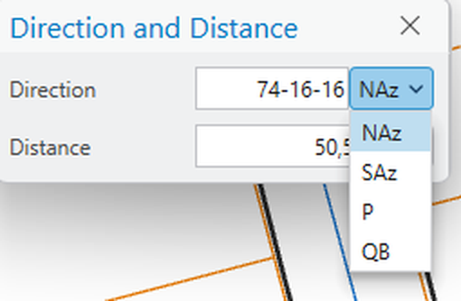
1234- 1NAz — azimute a partir do Norte.
- 2SAz — azimute a partir do Sul.
- 3P — polar.
- 4QB — rumo (quadrant bearing).
2. Rumo ou azimute? Olhe o memorial
- Tem letras de quadrante (N…E, S…E, S…W, N…W) e o ângulo nunca passa de 90°? É rumo.
- Vai até 360° e não tem letras? É azimute (quase sempre a partir do Norte).
Para trabalhar sempre em NAz, converta o rumo assim:
| Quadrante do rumo | Azimute (NAz) | Exemplo |
|---|---|---|
| N … E | = rumo | N 75°17'23" E → 75°17'23" |
| S … E | = 180° − rumo | S 14°42'37" E → 165°17'23" |
| S … W | = 180° + rumo | S 75°17'23" W → 255°17'23" |
| N … W | = 360° − rumo | N 14°42'37" W → 345°17'23" |
3. A pegadinha, com números reais
O memorial diz N 14°42'37" W. O técnico deixa o seletor em NAz e digita só o número: 14-42-37.
O Pro desenha o lado para nor-nordeste em vez de nor-noroeste: um desvio de 29°25'. A área continua a mesma — o lote só está no lugar errado.
E o contra-rumo? É a mesma linha percorrida ao contrário: N 14°42'37" W vira S 14°42'37" E. Se o memorial descreve o perímetro num sentido e você lê no outro, o lote vira de ponta-cabeça.
4. Checklist antes de digitalizar
- Ponto de partida: onde o memorial está amarrado (esquina, distância do alinhamento)? Comece por ele.
- Tipo de direção: rumo ou azimute? Converta para NAz antes de digitar.
- Sentido do percurso: horário ou anti-horário? Rumo ou contra-rumo?
- Qual Norte: memoriais antigos costumam usar o Norte magnético da época — e a declinação muda com os anos. Se o primeiro lado não acompanhar a rua, desconfie.
- Unidades: graus-minutos-segundos e metros. Documentos muito antigos podem trazer braças (≈ 2,2 m).
- Fechamento e área: o último ponto caiu no primeiro? A área bate com o memorial? Se não fechar, pare e consulte — nunca force o último ponto no primeiro.
Na dúvida sobre como ler um memorial, consulte o responsável técnico antes de digitalizar. No Bloco C você vai lançar um lote inteiro a partir do memorial — com a versão certa e com a “pegadinha”.
CTeste rápido
Quatro perguntas para fechar o bloco.
DPara aprofundar
Documentação oficial: tour rápido pela edição no ArcGIS Pro (seção da barra de construção e do menu de contexto).
Próximo bloco: editar lotes — desmembrar, remembrar e unir.
🧩 Bloco C — Editar lotes: desmembrar, remembrar, unir e lançar por memorial
As quatro operações que mais mudam o cadastro — feitas com medidas exatas e conferidas pela área.
📍 Cenário — Chegou à Prefeitura um pedido de desmembramento do lote 101-014-0355-001 (30,00 × 38,50 m = 1.155,00 m²) em duas partes iguais. Depois, o proprietário desistiu e pediu o remembramento. Por fim, você vai relançar o mesmo lote a partir do memorial descritivo — e ver o que acontece quando um rumo é lido errado.
Ao final deste bloco você vai saber
- Dividir um lote em partes exatas com Split.
- Juntar lotes com Merge e escolher qual deles doa os atributos.
- Criar um lote novo a partir de outros, mantendo os originais.
- Lançar um lote a partir do memorial, convertendo rumos para azimute.
APasso a passo
1Desmembrar com Split›
A nova divisa nasce no meio da testada e segue paralela às laterais até passar do fundo do lote.
- Selecione o lote 101-014-0355-001 › Modify Features › Split.
- No menu do Snapping, ligue o modo Midpoint (o triângulo).
- Primeiro clique: encoste o cursor na testada (o lado de 30 m, junto à rua de cima) até aparecer Lotes : Midpoint — e clique.
- G › 165-17-23 / 42 › Enter. Os 42 m garantem que a linha passe do fundo (o lote tem 38,50 m).
- Finish (F2).
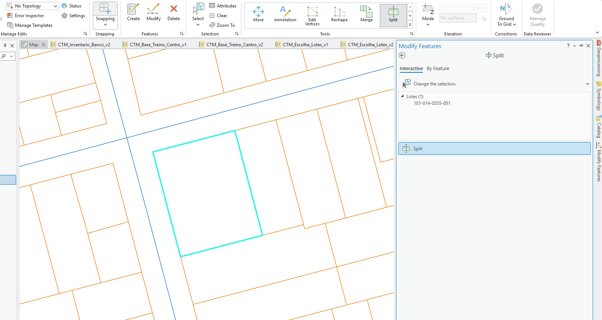
123- 1Split na guia Edit (ou em Modify Features › Divide).
- 2O lote selecionado aparece listado no painel.
- 3Lote 101-014-0355-001 selecionado (contorno ciano).
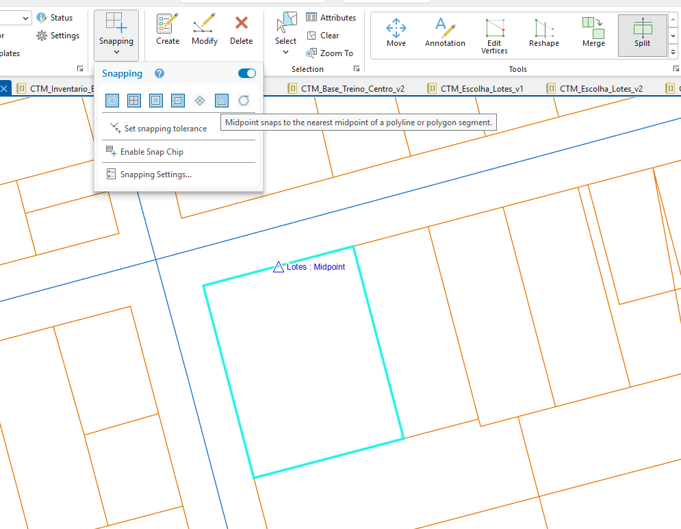
12- 1Modo Midpoint ligado no menu do Snapping.
- 2Primeiro clique: a dica Lotes : Midpoint aparece no meio da testada.
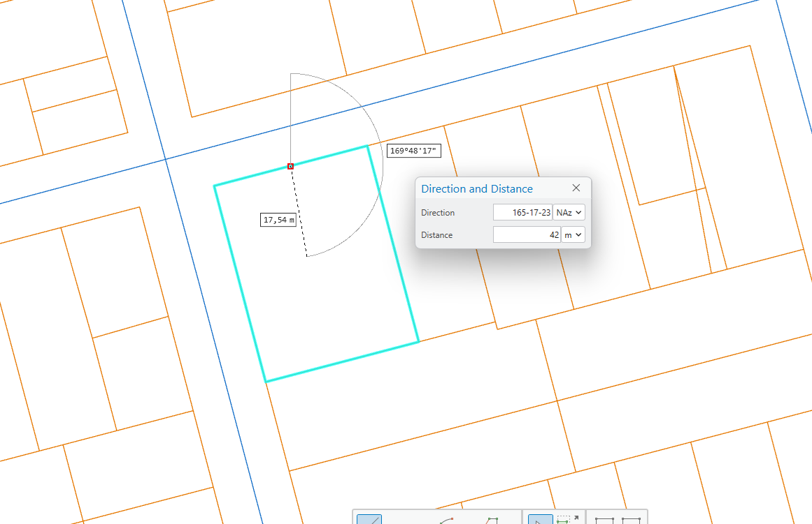
123- 1O primeiro ponto, no meio da testada.
- 2G: direção 165-17-23 (paralela às laterais).
- 3Distância 42 m — passa do fundo do lote.
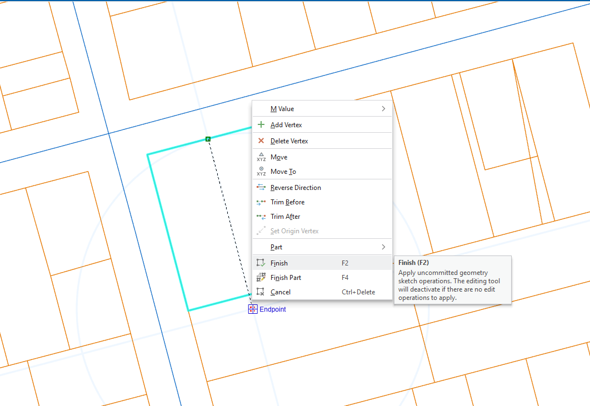
12- 1Finish (F2) aplica o corte.
- 2A linha terminou além do fundo do lote — o corte atravessa o lote inteiro.
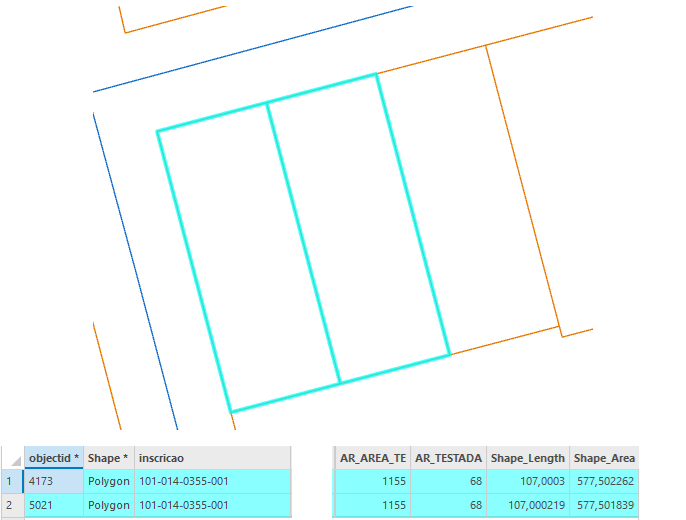
123- 1O lote virou duas partes, separadas pela nova divisa.
- 2As duas partes com a mesma inscrição — o Split copia os atributos.
- 3Shape_Area = 577,50 m² em cada parte.
- Duas partes com 577,50 m² cada (15,00 × 38,50 m).
- Shape_Length de cada parte ≈ 107,00 m.
Repare na tabela: as duas partes ficaram com a mesma inscrição e com AR_AREA_TE = 1155. Os atributos foram copiados. Atualizar inscrição e área de cada novo lote é assunto do Bloco D.
2Remembrar com Merge›
- Selecione as duas partes › Modify Features › Merge, aba Existing Feature.
- Em Features to merge, clique no lote que vai doar os atributos — ele recebe a marca (preserve). Confira os valores em Merged Feature Attributes.
- Clique em Merge.
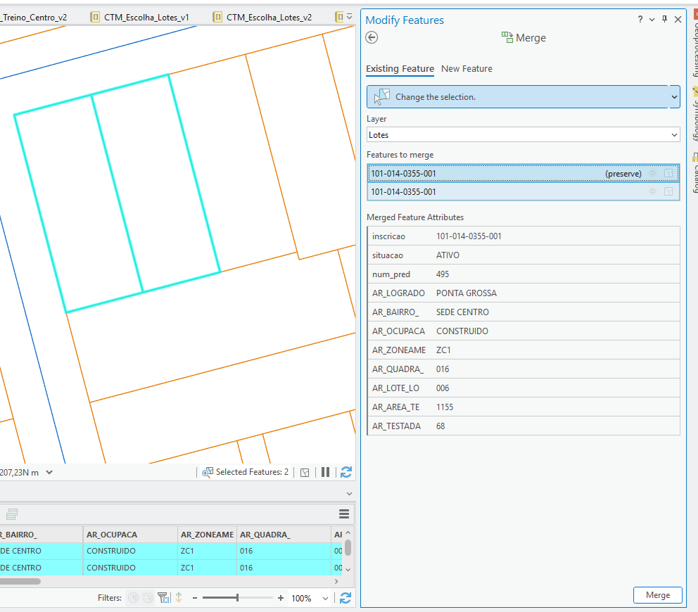
123- 1Aba Existing Feature = remembrar.
- 2(preserve): este lote continua existindo e doa os atributos.
- 3Botão Merge.
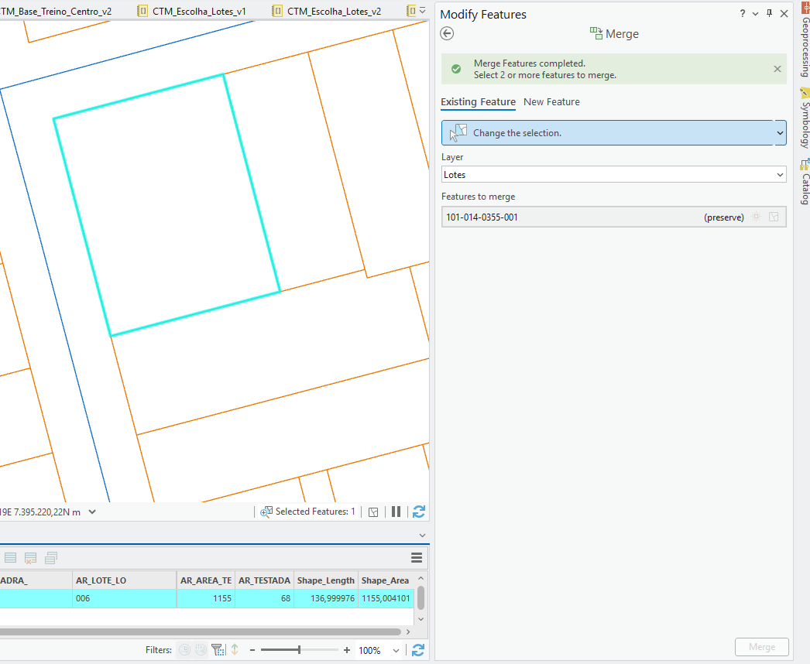
12- 1Merge Features completed.
- 2Um lote só, com 1.155,00 m².
- Um único lote com 1.155,00 m² (pequenas casas decimais são arredondamento).
- A mensagem Merge Features completed aparece no painel.
Na aba Existing Feature, (preserve) marca qual lote continua existindo com os seus atributos; os outros são incorporados a ele e deixam de existir.
3Unir mantendo os originais›
Às vezes é preciso criar um lote novo a partir de outros sem apagar os de origem — por exemplo, para simular um projeto antes de aprová-lo.
- Refaça o desmembramento do passo 1 (ou desfaça o Merge com Ctrl+Z).
- Selecione as duas partes › Merge › aba New Feature. Escolha a camada de destino e confira as opções do painel.
- Clique em Merge.
- Se a tabela mostrar 3 registros — duas partes de 577,50 m² e um lote novo de 1.155,00 m² — os originais foram mantidos.
- Se mostrar só 1 registro, os originais foram consumidos: Ctrl+Z e revise as opções da aba New Feature.
4Lançar um lote pelo memorial›
O memorial do lote chegou em rumos. Converta cada lado para azimute (NAz) com a tabela do epílogo do Bloco B e lance na camada Lotes.
| Trecho | No memorial (rumo) | Converta para NAz | Distância |
|---|---|---|---|
| Ponto inicial P1 | E 453181,03 · N 7395236,13 (digite com F6) | ||
| P1 → P2 | S 14°42'37" E | 165-17-23 | 38,50 |
| P2 → P3 | S 75°17'23" W | 255-17-23 | 30,00 |
| P3 → P4 | N 14°42'37" W | 345-17-23 | 38,50 |
| P4 → P1 | N 75°17'24" E | Finish (F2) fecha sozinho | |
- Create Features › template Lotes › ferramenta Polygon.
- F6 › coordenadas do P1 › Enter. Não clique no mapa antes.
- Para cada lado: G › direção em NAz › distância › Enter.
- Finish (F2).
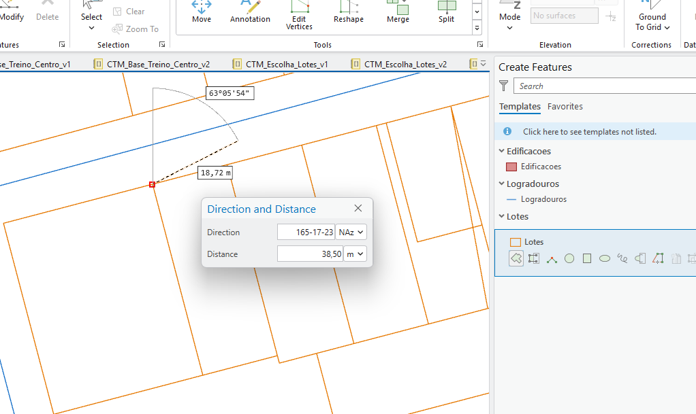
123- 1Template Lotes, ferramenta Polygon.
- 2P1 colocado com F6 (coordenadas do memorial).
- 31º lado: 165-17-23 / 38,50 (S 14°42'37" E convertido para NAz).
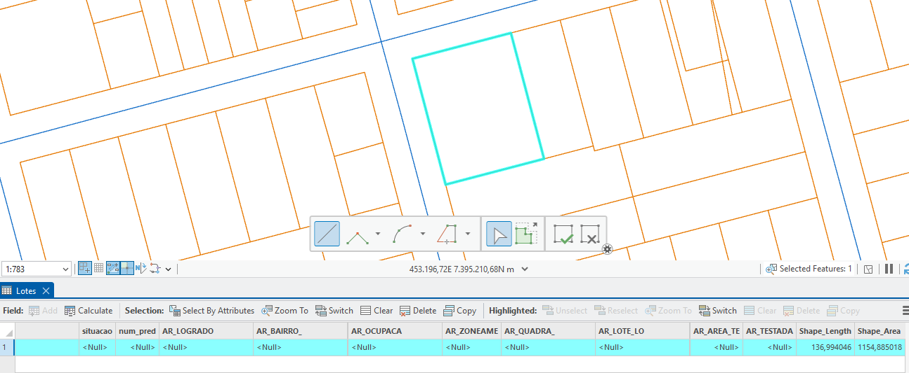
123- 1Lote lançado pelo memorial, em cima do original.
- 2Shape_Area ≈ 1.155 m² — dentro da tolerância.
- 3Atributos vazios (<Null>): o lote nasce sem dados cadastrais.
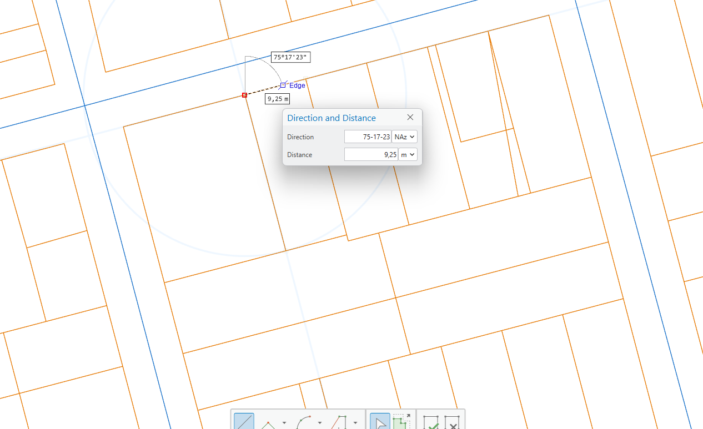
12- 12º lado digitado como 75-17-23 (contra-rumo) em vez de 255-17-23.
- 2O Pro mostra a direção: o lado vai para leste — o lote vai sair espelhado.
- Shape_Area entre 1.154,8 e 1.155,2 m². Fora dessa faixa, confira lado a lado o que foi digitado.
- O lote lançado cai em cima do lote original.
- Os atributos nascem vazios (<Null>) — o preenchimento é assunto do Bloco D.
A pegadinha: um contra-rumo no 2º lado
O técnico lê o 2º lado como N 75°17'23" E (o contra-rumo) e digita 75-17-23 em vez de 255-17-23. O Pro obedece: o lado vai para leste em vez de oeste.
O lote fecha, a área continua 1.155 m² — mas ele aparece espelhado, em cima do lote vizinho. Só quem olha o desenho percebe.
Lição: área certa não prova que o lançamento está certo. Confira também a posição.
BMão na massa
Exercício C1 — Desmembrar em duas partes iguais
- 2 × 577,50 m².
Exercício C2 — Remembrar as duas partes
- 1 lote de 1.155,00 m². Depois, Discard › Yes.
Exercício C3 — Unir mantendo os originais
- 3 registros na tabela. Depois, Discard › Yes.
Exercício C4 — Lançar pelo memorial (e errar de propósito)
Lance o lote pelo memorial. Depois, Discard › Yes e lance de novo trocando o 2º lado pelo contra-rumo (75-17-23).
- 1ª vez: ≈ 1.155 m², em cima do lote original.
- 2ª vez: mesma área, lote espelhado para o leste. No fim, Discard › Yes.
CTeste rápido
Quatro perguntas para fechar o bloco.
DPara aprofundar
Documentação oficial: tour rápido pela edição no ArcGIS Pro (painel Modify Features).
Próximo bloco: atributos — atualizar a inscrição e a área depois de desmembrar, preencher lotes novos e desconfiar de áreas que não batem.
🗂️ Bloco D — Atributos: o cadastro por trás do desenho
Desenho certo com dado errado continua sendo cadastro errado. Depois de cada edição, os atributos precisam acompanhar a geometria.
📍 Cenário — O desmembramento do Bloco C deixou o cadastro inconsistente: as duas partes do lote 101-014-0355-001 têm a mesma inscrição e a mesma área cadastral de 1155 m², embora cada uma meça 577,50 m². Você vai corrigir isso — e aprender a procurar outros lotes com o mesmo problema.
Ao final deste bloco você vai saber
- Ler os atributos de vários lotes selecionados.
- Corrigir um campo de um lote no painel Attributes.
- Calcular um campo em vários lotes de uma vez com Calculate Field.
- Copiar atributos de um lote para outro com Transfer Attributes.
- Encontrar lotes cuja área cadastral não bate com o desenho.
APasso a passo
1Ler os atributos de vários lotes›
- Refaça o desmembramento do Bloco C (exercício C1), sem salvar.
- Selecione as duas partes e abra o painel Attributes.
- No topo do painel aparecem as duas feições. Clique em cada uma para ver os dados dela embaixo.
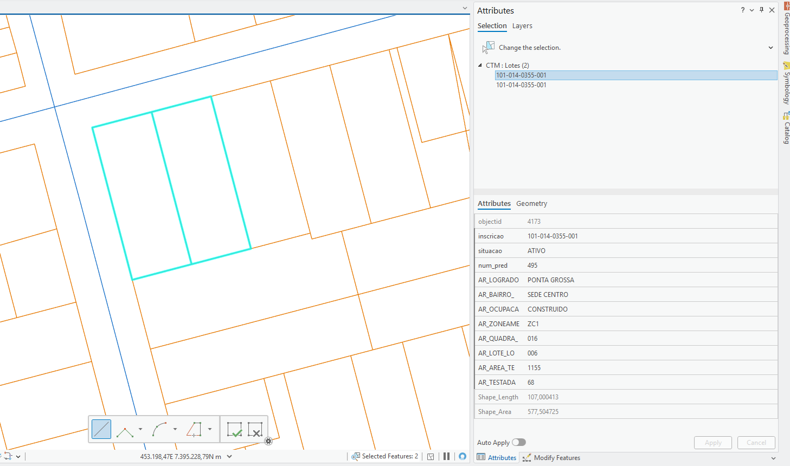
1234- 1Lotes (2): as duas partes listadas — clique em cada uma para ver os dados dela.
- 2inscricao igual nas duas partes.
- 3AR_AREA_TE = 1155: a área do lote antigo, copiada pelo Split.
- 4Shape_Area = 577,50: a área real de cada parte.
As duas partes têm a mesma inscricao e o mesmo AR_AREA_TE = 1155. Mas o Shape_Area — a área calculada pelo desenho — mostra 577,50 m² em cada uma.
2Corrigir um lote no painel Attributes›
- No topo do painel, clique em uma das partes. Só ela fica destacada no mapa.
- Clique no valor de inscricao e digite a nova inscrição. No treino, use 101-014-0355-002; no dia a dia, siga a regra de numeração da Prefeitura.
- Clique em Apply. Com o Auto Apply desligado, nada é gravado no lote até você clicar em Apply.
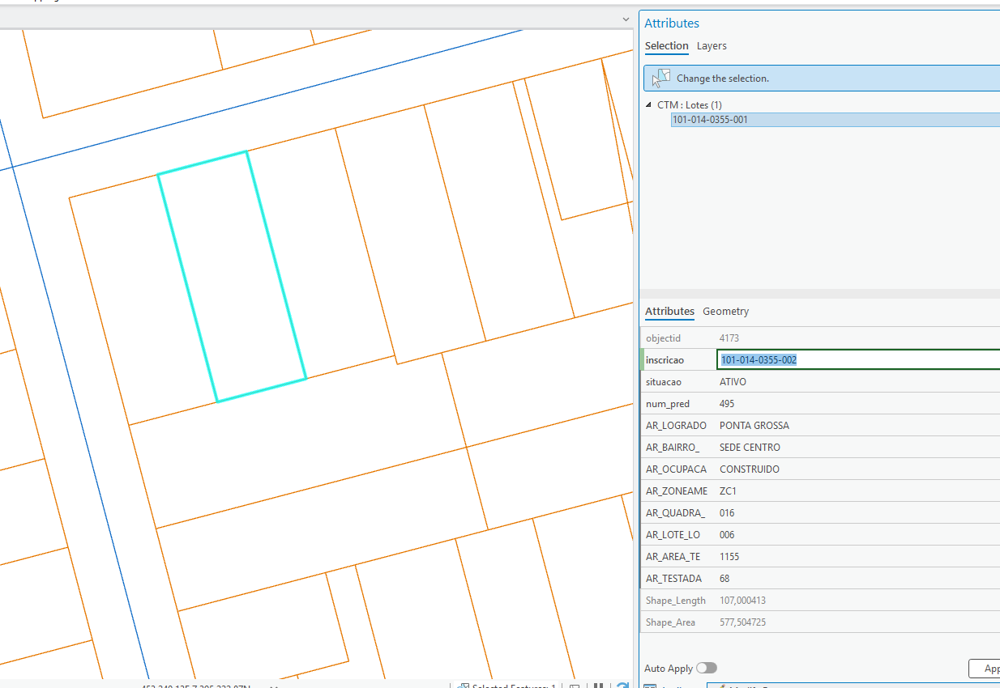
123- 1Só a parte clicada fica destacada.
- 2Nova inscrição digitada: 101-014-0355-002.
- 3Apply grava a alteração no lote.
3Calcular vários lotes de uma vez›
A área cadastral das duas partes precisa ser a área do desenho. Em vez de digitar lote por lote, calcule.
- Selecione as duas partes e abra a tabela de atributos da camada Lotes.
- Na tabela, clique em Calculate.
- Confira que Use the selected records está ligado e mostra 2.
- Field Name: ar_area_te · Expression Type: Python.
- Expressão: round(!Shape_Area!, 2) — a área do desenho, com 2 casas decimais.
- OK.
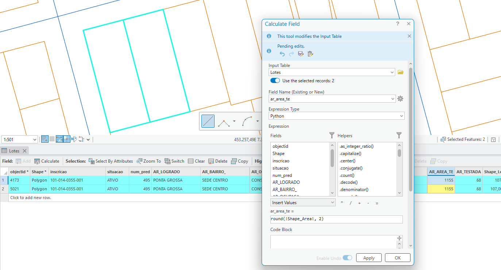
1234- 1Use the selected records: 2 — o cálculo só atinge as duas partes.
- 2Campo existente: ar_area_te.
- 3Expressão: round(!Shape_Area!, 2).
- 4OK aplica o cálculo.
- AR_AREA_TE = 577,5 nas duas partes.
1. Use the selected records ligado. Desligado, o cálculo roda em todos os 5.020 lotes da camada.
2. Escolha um campo que já existe. Se você digitar um nome novo, o Pro cria um campo na camada — e esse campo não some com o Discard.
3. Leia a expressão antes do OK. round(!Shape_Area!, 2) arredonda a área. Já math.pow(!Shape_Area!, 2) eleva a área ao quadrado: 577,50 viraria 333.506,25.
4Copiar atributos com Transfer Attributes›
O lote lançado pelo memorial no Bloco C nasceu com todos os atributos vazios (<Null>). Em vez de digitar campo por campo, copie-os de um lote que já tem os dados.
- Relance o lote pelo memorial (exercício C4), sem salvar.
- Modify Features › Attributes › Transfer Attributes.
- Na primeira vez, o Pro pede o mapeamento de campos: camada de origem e de destino = Lotes; marque os campos a copiar (inscrição, situação, logradouro, bairro, ocupação, zoneamento…).
- Clique no lote de origem (o que tem os dados) e depois no lote de destino (o dos <Null>).
- Corrija o que não deve ser copiado — a inscrição e a área — como nos passos 2 e 3.
- O lote lançado deixa de ter <Null> nos campos mapeados.
- Inscrição e área foram revisadas depois da cópia.
5Desconfiar de áreas que não batem›
O lote vago V2 (101-014-0240-001) mede 406,48 m² no desenho, mas o cadastro diz 375 m² — 8% a mais. Quantos lotes estão assim?
- Guia Map › Select By Attributes › camada Lotes.
- Mude para o modo SQL e cole:
Shape_Area > AR_AREA_TE * 1.05 Or Shape_Area < AR_AREA_TE * 0.95 - OK e veja quantos lotes ficaram selecionados (rodapé da tabela).
- O V2 está entre os selecionados.
A expressão separa lotes com diferença maior que 5% entre o desenho e o cadastro. Nem todos são erro: lotes de condomínio, em que várias inscrições dividem o mesmo polígono, também podem aparecer. A lista é um ponto de partida para conferência, não uma lista de correções automáticas.
Resumo: o fluxo completo de um desmembramento
- Split com o primeiro ponto no lugar certo (Bloco C).
- Conferir as áreas pelo Shape_Area.
- Corrigir a inscrição de cada parte no Attributes.
- Atualizar a área cadastral com Calculate Field (só nos selecionados).
- Save.
BMão na massa
Exercício D1 — Nova inscrição
- Uma parte com …-001 e a outra com …-002.
Exercício D2 — Área cadastral das duas partes
- 577,5 nas duas. Nenhum outro lote foi alterado. Depois, Discard › Yes.
Exercício D3 — Preencher o lote do memorial
- Sem <Null> nos campos mapeados; inscrição e área revisadas. Depois, Discard › Yes.
Exercício D4 — Caça às áreas divergentes
Rode a seleção, anote quantos lotes apareceram e escolha três para olhar no mapa: são erro de desenho, de cadastro ou condomínio?
- O V2 está na seleção. Nada foi editado neste exercício.
CTeste rápido
Quatro perguntas para fechar o tutorial.
⌨️ Atalhos e glossário
Atalhos usados no tutorial
| Tecla | O que faz | Bloco |
|---|---|---|
| Barra de espaço | Suspende o snapping enquanto estiver pressionada | B |
| F6 | Absolute X,Y: coloca um vértice por coordenadas | B, C |
| G | Direction/Distance: próximo vértice por direção e distância | B, C |
| D | Distance: fixa o comprimento do próximo lado | B |
| P | Parallel: próximo lado paralelo à linha clicada | B |
| E | Perpendicular: próximo lado a 90° da linha clicada | B |
| F2 | Finish: conclui o desenho | B, C |
| Ctrl+Z | Desfaz a última operação | A |
| Ctrl+Shift+T | Abre o painel Attributes | A, D |
Glossário
| Termo | Definição |
|---|---|
| Azimute (NAz) | Ângulo de 0° a 360°, medido no sentido horário a partir do Norte. |
| Rumo (QB) | Ângulo de 0° a 90° acompanhado do quadrante (ex.: N 14°42'37" W). |
| Contra-rumo | A mesma linha percorrida em sentido contrário: troca N↔S e E↔W. |
| Desmembramento | Divisão de um lote em dois ou mais (no Pro: Split). |
| Remembramento | Junção de dois ou mais lotes em um só (no Pro: Merge). |
| Inscrição | Código do imóvel no cadastro: setor-quadra-lote-unidade (ex.: 101-014-0355-001). |
| Snapping | Encaixe automático do cursor em vértices, bordas e pontos médios de feições existentes. |
| Shape_Area | Área calculada pelo próprio desenho, em m². Não pode ser editada. |
| Testada | Lado do lote voltado para a rua. |
| Memorial descritivo | Documento que descreve o perímetro do lote por pontos, direções e distâncias. |